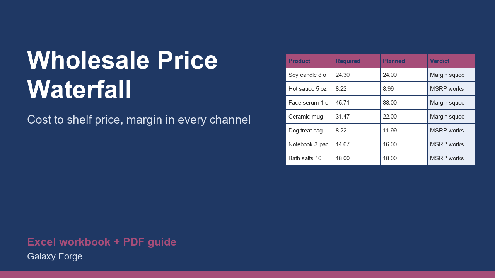

Work back from your unit cost through your wholesale price, the distributor and the retailer to the shelf price, and test whether your planned retail price leaves you a margin in every channel.
A product that sells well on your own site can lose money the moment a retailer stocks it. Retailers expect to keep roughly half the shelf price; distributors take their share too; and what is left must still cover your cost, packaging, freight and a profit.
This calculator takes the margin each channel needs and works the price back from your cost: your wholesale price, the distributor's price, and the retail price needed for everyone to earn their margin. It then compares that required retail price with the one you plan to charge and tells you whether your margin survives, is squeezed, or turns into a loss.
It also compares the profit on a wholesale unit with the profit on selling the same unit directly, so you can see how many wholesale sales equal one direct sale.
1) On Settings, enter your default retailer and distributor margins, your direct-sales fees and shipping cost, and use the Quick check to see one retail price split into shares. 2) On Products, enter each product's landed unit cost, your target margin and the channel margins that apply, and your planned retail price. 3) Read the required retail price, the margin at your planned price and the verdict. 4) Adjust price or cost until the verdict reads MSRP works.
Free guide: Wholesale Price Formula: Work Back From Cost Through the Retailer and Distributor
Price: $29, one-time. Download: wholesale_price_waterfall_channel_margin.xlsx (Settings, Products, Summary) and this guide. Works in Excel 2016 or later, Excel for Mac and Excel on the web; opens in Google Sheets and LibreOffice.
New product, listed 2026-11-05: no sales or reviews yet. Example figures in the workbook are illustrative.
This workbook is a pricing calculation tool, not legal, tax or competition-law advice. Retail price floors and resale price maintenance are restricted in some jurisdictions. Check your distribution and retail agreements before you set or enforce prices.